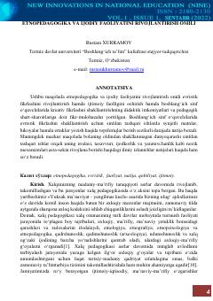

EVBoshlang'ich sinf o'quvchilarida ijodiy fikrlashni rivojlantirishda etnopedagogikaning o'rni va ahamiyati.
Ushbu maqola boshlang'ich sinf o'quvchilarida evristik fikrlash va ijodiy qobiliyatlarni rivojlantirishda etnopedagogikaning o'rni va didaktik imkoniyatlarini tahlil qiladi. Muallif xalq pedagogikasi manbalari, milliy qadriyatlar va an'analarning ta'lim-tarbiya jarayonidagi ahamiyatini ilmiy jihatdan yoritib beradi.